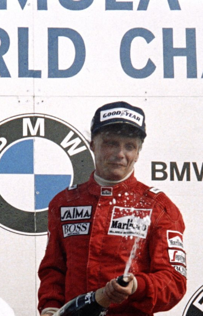

Nascido em 22 de fevereiro de 1949, na Áustria, é conhecido por sua notável carreira e pela sua incrível recuperação após um acidente quase fatal em 1976. Lauda conquistou 3 títulos mundiais e é admirado por sua coragem e determinação, além de ser uma figura influente fora das pistas como comentarista e consultor.